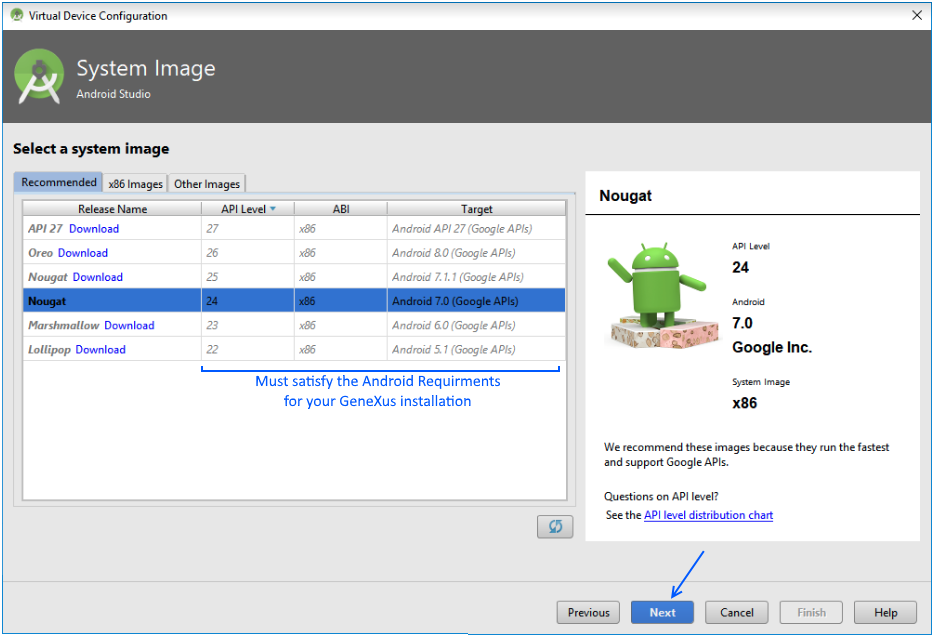

You do not have to create an Android Virtual Device (AVD) because GeneXus does it for you. By default, the first time GeneXus runs an Android application it tries to create an AVD called "Genexus-APIX-x86" with the supported Android version, where X will be the number of the API version used (e.g. 24 for Android 7.0).
You may need to change the default AVD created by GeneXus if your application requires more/less memory, more storage, a different layout (e.g. tablet), etc. This article explains three alternatives to create your own AVD instances. Make sure to start the emulator with one of these new AVD before running the application from GeneXus, which automatically detects the AVD instance started (avoid starting multiple emulators). Refer to Prototyping device selection - Android for details.
In the following examples, an Android 7" Tablet will be created but feel free to add your customizations.
- Open Windows PowerShell or Command Prompt.
- Open your Android SDK directory by using cd command.
> cd <my_android_sdk_directory>/tools/bin
- Execute the avdmanager.bat tool with create avd command as follows.
> C:\<my_android_sdk>\tools\bin\avdmanager create avd --name MyAndroidTablet
--packages "system-images;android-24;google_apis;x86"
--tag "google_apis" --abi "x86" --device "7in WSVGA (Tablet)"
Notes:
-- name
Name of the new AVD.
-- packages, --tag, --abi
Must satisfy Android Requirements for your GeneXus installation.
-- device
The device name. Available devices can be listed by executing:
> C:\<my_android_sdk>\tools\bin\avdmanager list device
- Run your new Android emulator by executing the emulator program.
> C:\<my_android_sdk>\tools\emulator -avd MyAndroidTablet
- Done!
- Open Android Studio.
- Go to Tools > Android > AVD Manager.
- Click on the "Create Android Device.." button.
- Select which device you want to create (you can also customize, create new, or import one previously created).
As it was mentioned before, an 7" Android Tablet will be created:
- Select the system image. Must satisfy Android Requirements for your GeneXus Installation.

Then, click on the "Next" button.
- Select the name for your AVD and click on Finish.
- Finally, select the device previously created and click on the "Play" icon to launch it.
Warning: These components are no longer available as of Android SDK 25.3.0.
- Go to your Android SDK directory and open the Android Virtual Manager program (called AVD Manager.exe). If you haven't installed the Android SDK, please follow Android Requirements to install it.
- Click on the "Create..." button.
- Complete the options with your preferences, and click on the "OK" button.
Make sure that Target and CPU/ABI are under the scope of the Android Requirements for your GeneXus upgrade.
- On the AVD Manager, select your new emulator and click on the "Start..." button. In the new window displayed, click on "Launch".
The new AVD will start.
- Done!